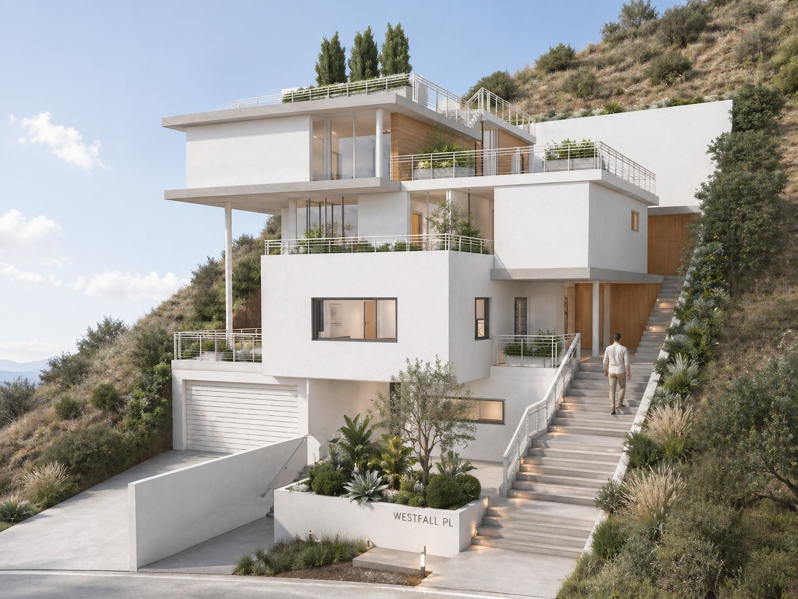
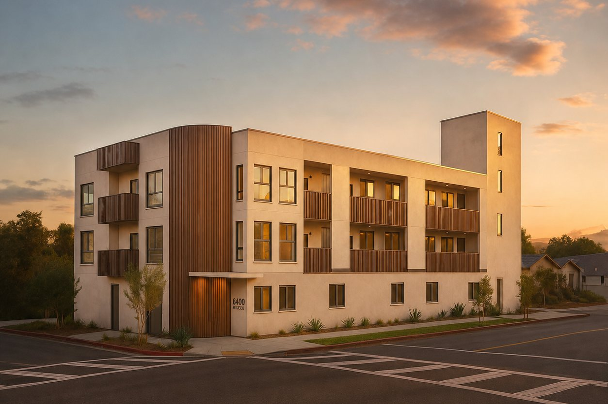
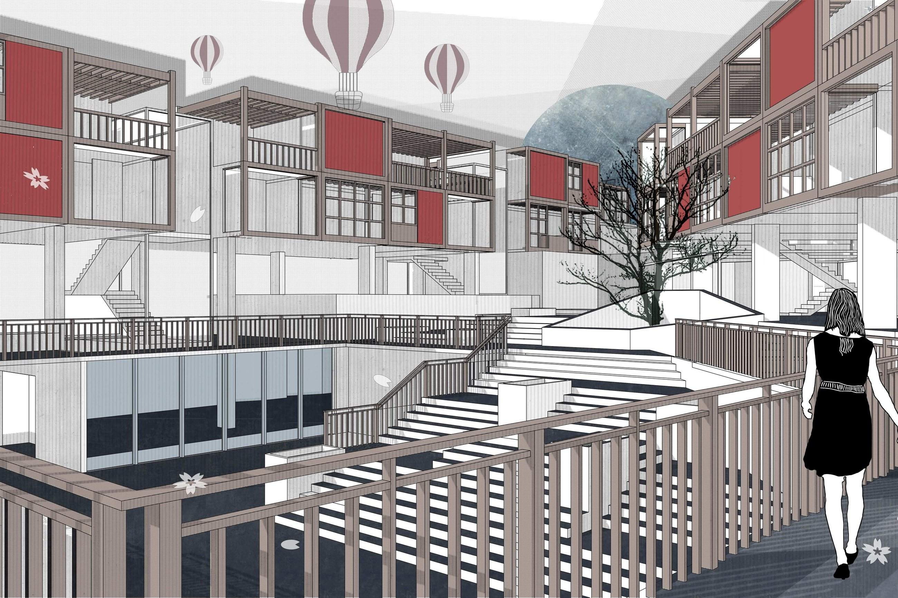
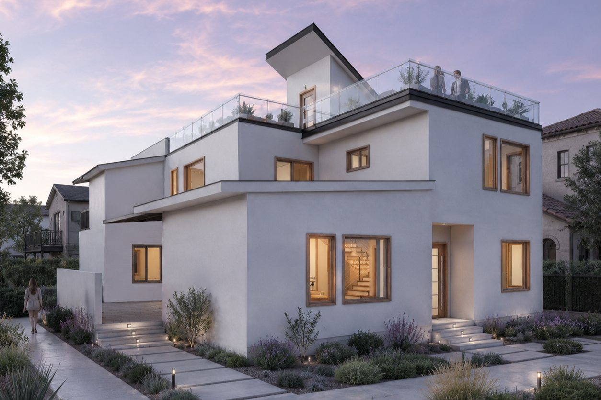
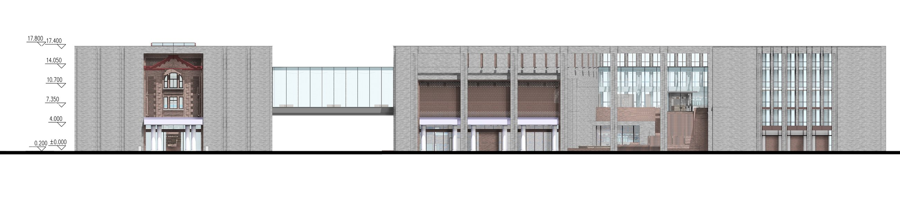

01 Westfall Hillside House 2025
 Siqi Zhang
Siqi Zhang
Architectural designer in Los Angeles. I run residential and small commercial projects end to end and care most about how people actually live in what gets built.
Scroll to lift the trace

01 Westfall Hillside House 2025


02 Beck Corner Apartment 2023–2025


03 The Collage Community 2018

04 Ashton House Remodel 2025


05 Marxism School Building, PKU 2019
Three years of post-graduate practice in Los Angeles, running 20+ projects at a time from schematic design through permit. Work spans hillside single-family homes, 100% affordable multi-family housing, ADUs and tenant improvements, with earlier large-scale commercial design for South Korea at CallisonRTKL.